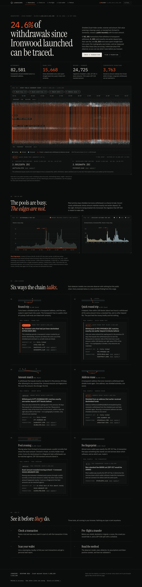
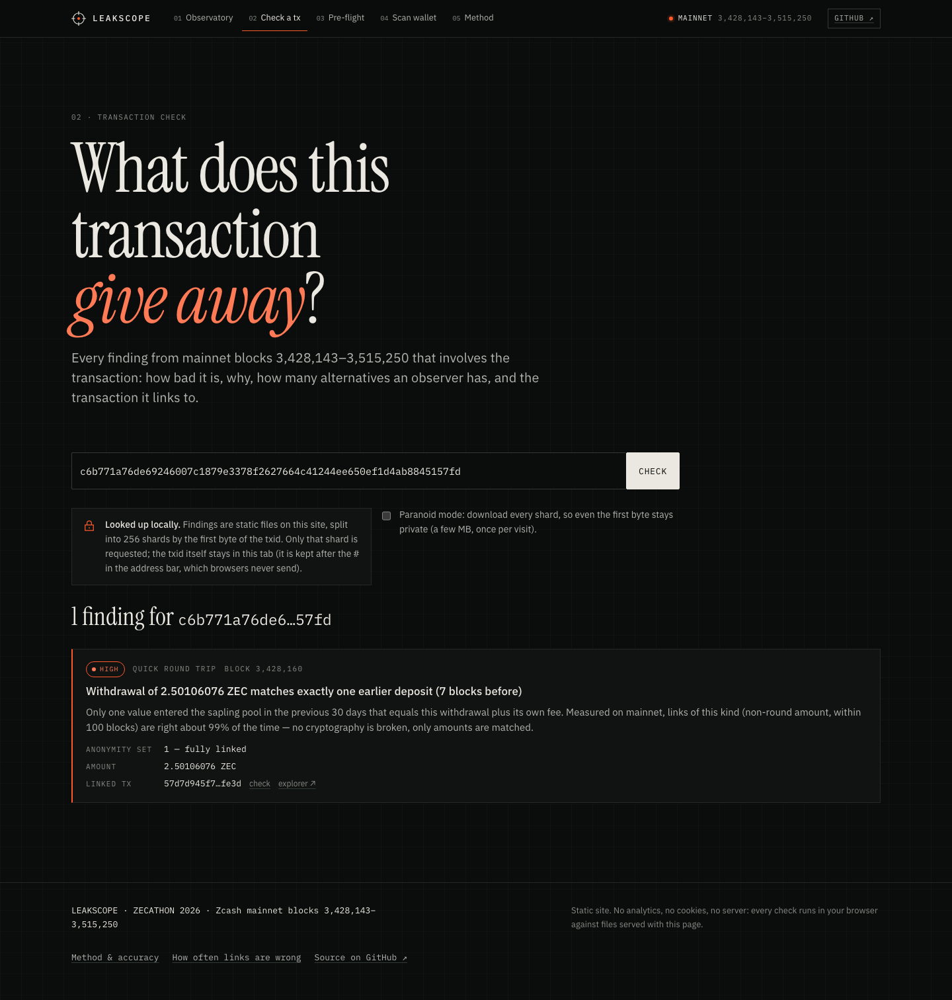
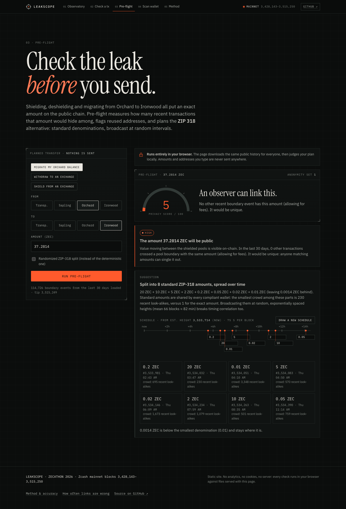
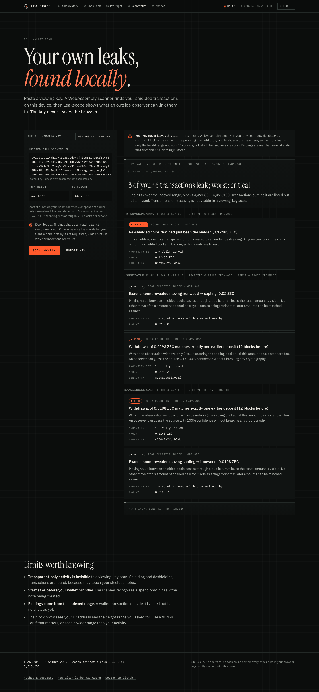
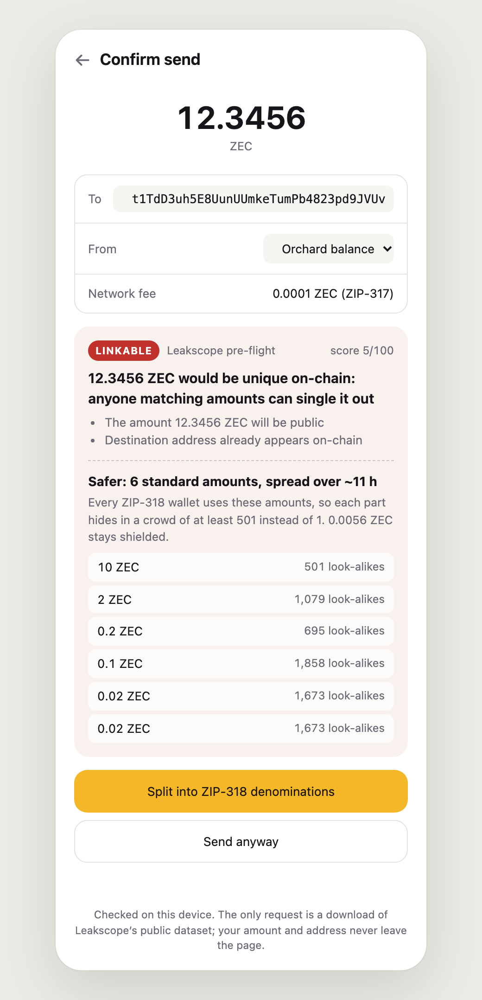

A privacy linter & observatory for Zcash
Shielded pools hide everything, except their edges
First 75.6 days of Ironwood · public chain only
Mainnet · verifiable on any explorer
The fee is public, so deposit = withdrawal + its fee pins the match to one exact value. No other deposit in the 30-day window fits: anonymity set of 1. Leakscope's /check flags it as a high-severity quick round trip.
Precision measured, not assumed
Money can't leave before it arrives. Matching each withdrawal against deposits made after it can only find coincidences, which gives the false-link rate on the chain's real amounts.
| Tier we report | Links | Coincid. | Precision |
|---|---|---|---|
| Non-round, ≤100 blocks | 2,535 | 1 | ≈99% |
| Non-round, ≤1 day | 128 | 19 | ≈85% |
| Round, ≤10 blocks (small sample) | 13 | 0 | ≈90% |
| Non-round, >1 day apart | 447 | 603 | dropped |
More coincidences than links beyond a day, so those links are not reported at all. Round amounts >10 blocks apart: also dropped.
75.6 days · 584,497 transactions




@leakscope/engine · pre-flight SDK
import { checkSend, loadPublishedContext } from '@leakscope/engine'; const ctx = await loadPublishedContext(); // public dataset, once const v = checkSend({ from: 'orchard', to: 'transparent', amountZat: 1_234_560_000, toAddress: 't1…', }, ctx); v.level; // 'danger' score 5 / 100 v.headline; // '12.3456 ZEC would be unique on-chain: …' v.suggestedSplit; // ZIP-318 parts + random broadcast schedule

Open source · MIT OR Apache-2.0 · fully reproducible
Turning “leaks are disqualifying” into a product
Every number in this deck is reproducible from public chain data and open code: report.ts + evaluate.ts. Ground truth: our own deliberate testnet mistakes were caught, each leak class reproduced on regtest, mainnet examples spot-checked on an independent explorer.
Goals, not announcements
Try it in two minutes